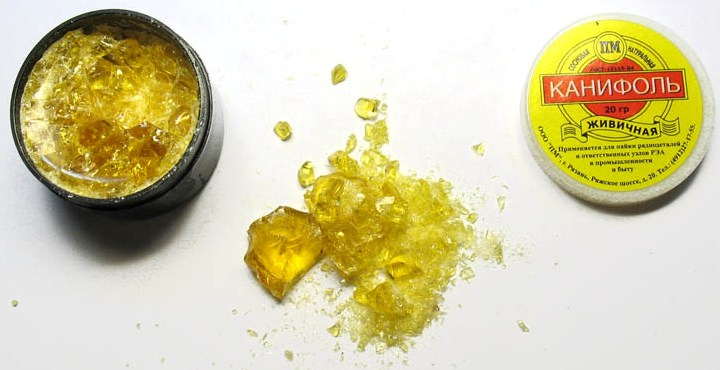
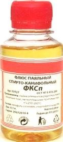
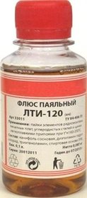

Флюсы
Флюсы - химические вещества для удаления окислов (пленка окислов мешает смачиванию поверхности припоем) и загрязнений с поверхности спаиваемого металла, защиты его от окисления и лучшего смачивания припоем (припой лучше растекается, затекая во все промежутки). При паянии флюсы играют роль химических растворителей и поглотителей окислов. Температура плавления флюса должна быть несколько ниже температуры плавления применяемого припоя. От качества флюса во многом зависит хорошее смачивание припоем мест спайки и образование прочных швов. При температуре паяния флюс должен плавиться и растекаться равномерным слоем, в момент же пайки он должен всплывать на внешнюю поверхность припоя.
Различают две группы флюсов:
- Химически активные, растворяющие пленки окиси, а часто и сам металл (соляная кислота, бура, хлористый аммоний, хлористый цинк).
- Химически пассивные, защищающие лишь спаиваемые поверхности от окисления (канифоль, воск, стеарин и т. п.) .
Флюсы бывают твердыми, жидкими, в виде геля или пасты.
Химически активные флюсы
Химически активные флюсы (кислотные) — это флюсы, имеющие в большинстве случаев в своем составе свободную соляную кислоту. Существенным недостатком кислотных флюсов является интенсивное образование коррозии паяных швов.
К химически активным флюсам прежде всего относится соляная кислота, которая употребляется для пайки стальных деталей мягкими припоями. Кислота, оставшаяся после пайки на поверхности металла, растворяет его и вызывает, появление коррозии. После пайки изделия необходимо промыть горячей проточной водой. Применение соляной кислоты при пайке радиоаппаратуры запрещается, так как во время эксплуатации возможно нарушение электрических контактов в местах пайки. Следует учитывать, что соляная кислота при попадании на тело вызывает ожоги.
Хлористый цинк (травленая кислота) в зависимости от условий пайки применяется в виде порошка или раствора. Используется для пайки латуни, меди и стали. Для приготовления флюса необходимо в свинцовой или стеклянной посуде растворить одну весовую часть цинка в пяти весовых частях 50-процентной соляной кислоты. Признаком образования хлористого цинка служит прекращение выделения пузырьков водорода. Из-за того, что в растворе всегда имеется небольшое количество свободной кислоты, в местах пайки возникает коррозия, поэтому после пайки место спая должно тщательно промываться в проточной горячей воде. Пайку с хлористым цинком в помещении, где находится радиоаппаратура, производить нельзя. Применять хлористый цинк для пайки электро и радиоаппаратуры также нельзя. Хранить хлористый цинк необходимо в стеклянной посуде с плотно закрытой стеклянной пробкой.
Бура (водная натриевая соль пироборной кислоты) применяется как флюс при пайке латунными и серебряными припоями. Легко растворяется в воде. При нагревании превращается в стекловидную массу. Температура плавления 741°С. Соли, образующиеся при пайке бурой, необходимо удалять механической зачисткой. Порошок буры следует хранить в герметически закрытых стеклянных банках.
Нашатырь (хлористый аммоний) применяется в виде порошка для очистки рабочей поверхности паяльника перед лужением.
Химически пассивные флюсы (бескислотные).
К бескислотным флюсам относятся различные органические вещества: канифоль, жиры, масла и глицерин.
Наиболее широко в электро- и радиомонтажных работах применяется канифоль (в сухом виде или раствор ее в спирте). Канифоль — продукт переработки смолы хвойных деревьев. Более светлые сорта канифоли (более тщательно очищенные) считаются лучшими. Температура размягчения канифоли от 55 до 83°С. Применяется как флюс для пайки мягкими припоями. На английском языке канифоль называется «rosin».

Канифоль
Самое ценное свойство канифоли, как флюса, заключается в том, что ее остатки после пайки не вызывают коррозии металлов. Канифоль не обладает ни восстанавливающими, ни растворяющими свойствами. Она служит исключительно для предохранения места пайки от окисления. Для приготовления спиртово-канифольного флюса берется одна весовая часть толченой канифоли, которая растворяется в шести весовых частях спирта. После полного растворения канифоли флюс считается готовым. При применении канифоли места пайки должны быть тщательно очищены от окислов. Часто для пайки с канифолью детали следует предварительно облуживать.
Стеарин не вызывает коррозии. Используется для пайки с особо мягкими припоями свинцовых оболочек кабелей, муфт и др. Температура плавления около 50°С.
В последнее время широкое применение получила группа флюсов ЛТИ, применяемых для пайки металлов мягкими припоями. По своим антикоррозийным свойствам флюсы ЛТИ не уступают бескислотным, но в то же время с ними можно паять металлы, которые раньше не поддавались пайке, например детали с гальваническими покрытиями. Флюсы ЛТИ могут применяться также для пайки железа и его сплавов (включая нержавеющую сталь), меди и ее сплавов и металлов с высоким удельным сопротивлением.
| Наименование | В весовых пропорциях | ||
|---|---|---|---|
| ЛТИ-1 | ЛТИ-115 | ЛТИ-120 | |
| Спирт-сырец или ректификат | 67-73 | 63-74 | 63-74 |
| Канифоль | 20-25 | 20-25 | 20-25 |
| Солянокислый анилин | 3-7 | — | — |
| Метафенилендиамин | — | 3-5 | — |
| Диэтиламин солянокислый | — | — | 3-5 |
| Триэтаноламин | 1-2 | 1-2 | 1-2 |
При пайке с флюсом ЛТИ достаточно произвести очистку мест пайки только от масел, ржавчины и других загрязнений. При пайке оцинкованных деталей удалять цинк с места пайки не следует. Перед пайкой деталей с окалиной последняя должна быть удалена травлением в кислотах. Предварительное травление латуни не требуется. Флюс наносится на место спая с помощью кисточки, что можно сделать заблаговременно. Хранить флюс следует в стеклянной или керамической посуде. При пайке деталей сложного профиля можно применять паяльную пасту с добавлением флюса ЛТИ-120. Она состоит из 70—80 г вазелина, 20—25 г канифоли и 50—70 млг флюса ЛТИ-120.
Но флюсы ЛТИ-1 и ЛТИ-115 имеют один большой недостаток: после пайки остаются темные пятна, а также при работе с ними необходима интенсивная вентиляция. Флюс ЛТИ-120 не оставляет темных пятен после пайки и не требует интенсивной вентиляции, поэтому применение его значительно шире. Обычно остатки флюса после пайки можно не удалять. Но если изделие будет эксплуатироваться в тяжелых коррозийных условиях, то после пайки остатки флюса удаляются при помощи концов, смоченных спиртом или ацетоном. Изготовление флюса технологически несложно: в чистую деревянную или стеклянную посуду заливается спирт, насыпается измельченная канифоль до получения однородного раствора, затем вводится триэтаноламин, а затем активные добавки. После загрузки всех компонентов смесь перемешивается в течение 20—25 минут. Изготовленный флюс необходимо проверить на нейтральную реакцию с лакмусом или метилоранжем. Срок хранения флюса не более 6 месяцев.
| Флюс | Состав |
|---|---|
| КЭ | Канифоль 10…40%, спирт 60…90%, |
| ГК | Канифоль 6%, спирт 80%, глицерин 14% |
| ЛТИ | Канифоль 22%, спирт 70%, анилин солянокислый 6%, триэтаноламин 2%, |
| ФПЭт | Смола ПН-9 или ПН-56 15…50 %, этилацетат 50…85 % |
| ФКЭт | Канифоль 10…60%, этилацетат 40-90% |
| ФКСп | Канифоль 10…60%, спирт этиловый или этилацетат 40…90% |
Один из самых распространенных и доступных флюсов для пайки плат – флюс марки КЭ.

Флюс ФКСп
Флюс спиртоканифольный СКФ (ФКСп) его разновидности: КЭ, ФКЭт, ФКСп. Применяется для пайки на платах элементов радиомонтажа при температурах 250-280°C.

Флюс ЛТИ-120.
Флюс ЛТИ-120 предназначен не только для пайки плат, но и углеродистых сталей, цинка припоями при температуре 200…300°C. ПН-9, ПН-56 – флюсы, в состав которых входят канифоль или полиэфирные смолы. Перечисленные флюсы подходят для пайки меди, латуни, серебра, золота их остатки не снижают электрического сопротивления оснований плат и не вызывают коррозии. Флюсы ФКСп, ФКЭт и ФПЭт также применяются для консервации плат при длительных сроках складского хранения в качестве покрытий.
| Наименование | Состав | Температура пайки |
Область применения | Норма расхода, г/см2 |
Способ удаления остатков |
|---|---|---|---|---|---|
| Кислотные | |||||
| Хлористый цинк | Водный раствор хлористого цинка | не ниже 263°C | Детали из черных и цветных металлов | 0,18 | Промывка в 5%-ном растворе кальцинированной соды, затем в проточной горячей воде; протирка тряпкой и сушка в термостате при температуре 100-110°C |
| Паста | Хлористый цинк. Вазелин |
не ниже 263°C | Детали простой конфигурации из черных и цветных металлов | 0,15 | Промывка в бензине, затем в проточной горячей (80°C) воде; протирка тряпкой и сушка в термостате при температуре 100-110°C |
| Прима 1 | Хлористый цинк, Хлористый аммоний. Спирт. Глицерин |
не ниже 170°C | Детали из черных и цветных металлов, никеля, платины и ее сплавов | 0,12 | Тщательная промывка в проточной горячей воде; протирка тряпкой и сушка в термостате при температуре 100-110°C |
| Антикоррозионные | |||||
| ВТС | Вазелин. Триэтаноламин. Салициловая кислота. Спирт. |
- | Монтажные соединения, детали из меди, латуни, бронзы, константана, серебра, платины и ее сплавов | 0,15 | Протирка сухой тряпкой или бязью, смоченной в смеси этилового спирта и бензина (1:1) |
| ФИМ | Ортофосфорная кислота. Спирт. Вода. |
- | Детали из черных металлов, меди, латуни, бронзы, допускающие промывку в воде | 0,11 | Промывка в горячей проточной воде; протирка тряпкой и сушка в термостате при температуре 100-110°C |
| Бескислотные | |||||
| Канифоль | Канифоль натуральная | 150°C - 350°C | Для пайки монтажных соединений и деталей из меди, латуни и бронзы. | 0,13 | Протирка тряпкой, смоченной спиртом или растворителем. |
| КЭ | Спиртовой раствор канифоли | 150°C - 300°C | Для пайки монтажных соединений и деталей из латуни, бронзы, нейзильбера и др. | 0,10 | Протирка тряпкой, смоченной спиртом или растворителем. |
| Глицерино-канифолевый | Канифоль. Глицерин. Спирт |
- | Для пайки замкнутых систем и капилляров, заполняемых различными жидкостями | 0,12 | Протирка тряпкой, смоченной спиртом или растворителем. |
| Флюс с анилином | Анилин солянокислый. Канифоль. Глицерин. |
- | Для пайки монтажных соединений и деталей из черных и цветных металлов | 0,12 | Протирка тряпкой, смоченной спиртом или растворителем. |
| ЛТИ | Канифоль. Анилин солянокислый. Триэтаноламин. Метафенилдиамин. Диэтиламин солянокислый. Спирт. |
230°C - 330°C | Для пайки деталей из стали различных марок, нержавеющей стали; меди, бронзы, нейзильбера, цинка, нихрома, никеля, серебра, оксидированных и пассивированных деталей из медных сплавов без предварительной зачистки. | 0,15 | Протирка мягкой тряпкой, смоченной спиртом или ацетоном. |
| Активированные | |||||
| КЭЦ | Канифоль. Хлористый цинк. Спирт. |
- | Для деталей из черных, цветных драгоценных металлов (золото) | 0,11 | Протирка тряпкой, смоченной растворителем. |
| Паста 4 | Канифоль. Хлористый цинк. Вазелин. |
- | Для соединений повышенной прочности, деталей из черных и цветных металлов, которые могут быть тщательно промыты | 0,12 | Промывка в бензине, затей в горячей (80°C) проточной воде; протирка тряпкой и сушка в термостате при температуре 100-110°C |
Паяльная паста – это смесь флюса и маленьких гранул припоя. Паяльная паста наносится через маску на плату. Сверху устанавливаются компоненты, и плата отправляется в печь, где паяльная паста расплавляется и припой из ее состава припаивает компонент к контактной площадке.
Флюс для паяния алюминия состоит из тунгового масла, канифоли и кальцинированного хлористого цинка, взятых в соотношении 3:2:1 (по массе). Для удаления окислов на алюминии при паянии применяют мелкие стальные опилки, которые в процессе паяния сдирают образующийся окисел.